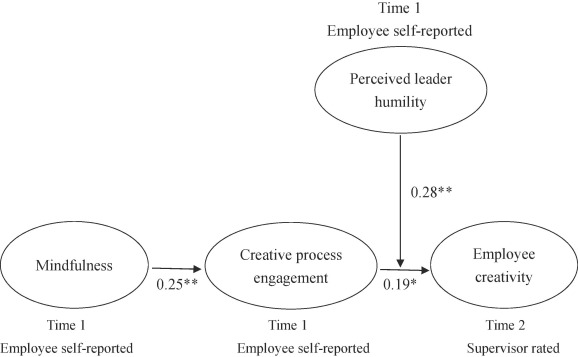

Summary
Empowering leadership is an actual and specific application of creative leadership in the workplace.
Empowering
According to the definition from Zhang and Bartol, engagement means how much time, effort and attention the members have put into the project (Zhang & Bartol, 2010). Supported by the actual status, by actions taken by the leader, which is to let the employees learn about how meaningful their work will be to the company, and have enough freedom to carry out their work, it will actually enhance the intrinsic motivation of the employees and let creative people deeply participate in the project (Zhang & Bartol, 2010). Zhang and Bartol prove that the engagement of the group members have a supportive function, which can also be a necessary factor that lead to the team to give the creative outcome, which is more effort and attention the members have already put in the project, the more they would like to think of a creative method and solutions for the project (Zhang & Bartol, 2010). Thinking of the action that we can apply this discovery to the actual working environment that the research has mentioned little, maybe the leader can encourage employers to not just work for one position or project, but can choose multiple positions according to their skill sets to enhance the willingness to participate more in one project, which can also let the individuals get more information about the project, so that the solution the creatives figure out can also be more easier to have both constructive and innovative.
Group Dynamic
A fact that Geng and the research team found out, which is asking constructive feedback from people outside the creative group can be a way to make creative progress when leading a team (Geng et al., 2020). The content of the experience, from the description of the article, is research that focuses on finding out the relation between the degree of creativity of a group and the feedback they got from the external clients, experts and shareholders (Geng et al., 2020). By doing a questionnaire survey, Geng’s group proved that although getting extra feedback from external groups can only have obvious positive influence when the team contains a high level of expertise and creative level (Geng et al., 2020). Still, it can be a direction to think of when trying to stimulate creative thinking in the real working space. An specific example that can be thought of, is that in the field of art, artists will sometimes receive requests from client to customize a piece of artwork, and always from the perspective of artists, this form of cooperation will actually provide another perspective that cannot easily figure out since a large of time have been devoted into the same project which makes it hard to evaluate it in a short time, and since the consumers have spent money on the artwork, usually artists with enough skillsets will be able to think of a way to solve the problem, eventually create a piece of artwork that is more reasonable in a shorter time when creating a piece of art.

Creative Process Engagement
A discovery that as a creative leader, it will be also well worth encouraging members to participate more in the project, which can increase the intrinsic motivation for nourishing the creative environment. Zhang and Bartol prove that the engagement of the group members have a supportive function, which can also be a necessary factor that lead to the team to give the creative outcome, which is more effort and attention the members have already put in the project, the more they would like to think of a creative method and solutions for the project (Zhang & Bartol, 2010). Thinking of the action that we can apply this discovery to the actual working environment that the research has mentioned little, maybe the leader can encourage employers to not just work for one position or project, but can choose multiple positions according to their skill sets to enhance the willingness to participate more in one project, which can also let the individuals get more information about the project, so that the solution the creatives figure out can also be more easier to have both constructive and innovative. To sum up, empowering leadership block has mentioned two participle methodologies that can be immediately applied in a real workplace, which is to give more power to let the creatives make decisions (Zhang & Bartol, 2010), and to ask for advice from external people (Geng et al., 2020). Using those two tips will be a helpful choice when a group needs to stimulate creativity.
